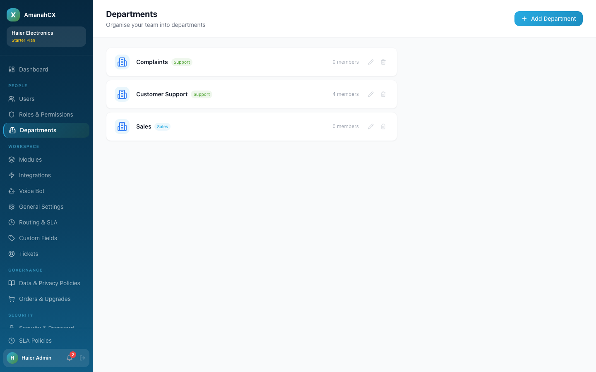
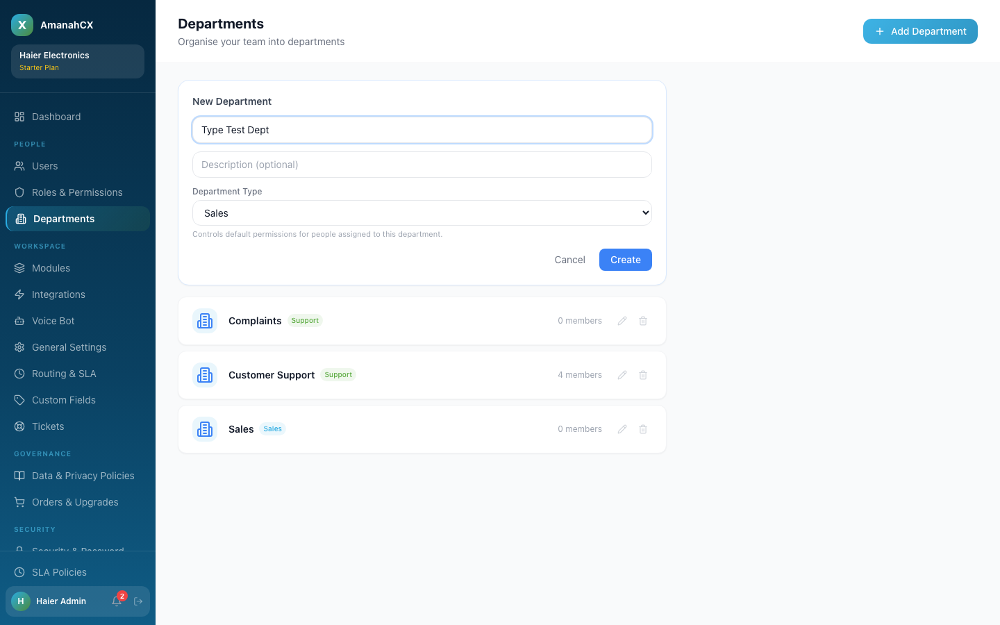
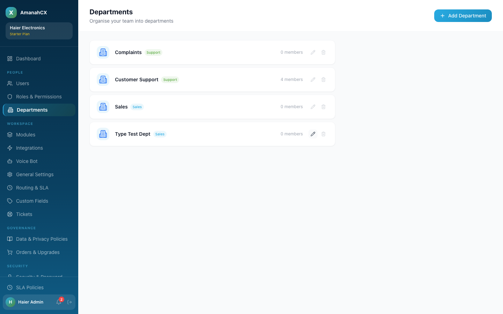
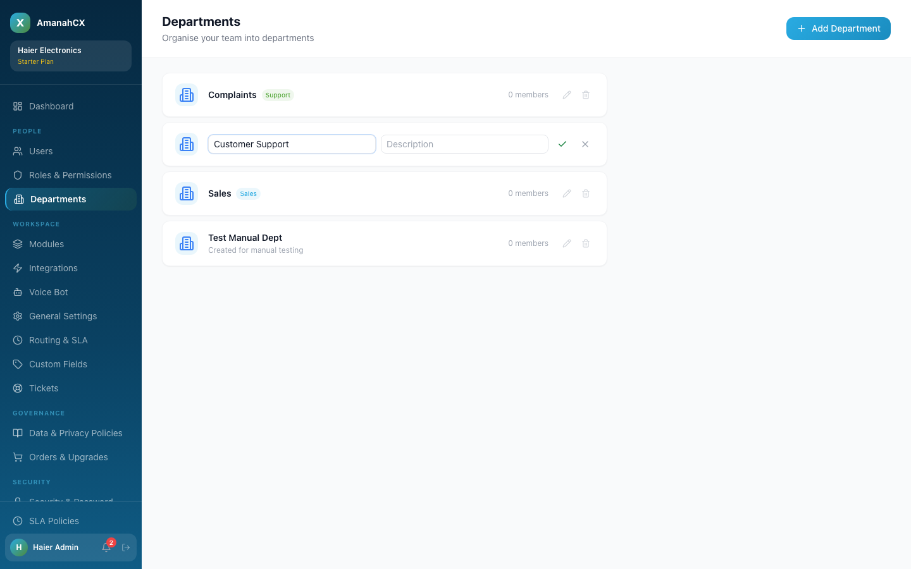
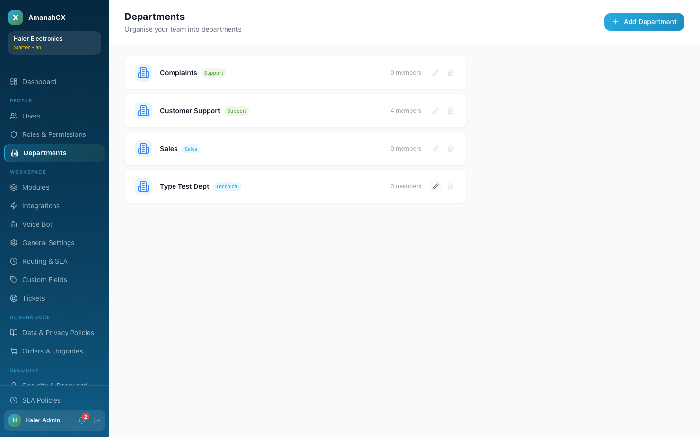

Departments (Workspace → Departments, just below Roles & Permissions in the People section) are how you organise your team into groups — Sales, Support, Complaints, or whatever structure fits your business.

Click + Add Department, give it a name, an optional description, and a Department Type, then Create.


Click the pencil icon on any department to rename it, change its description, or change its type inline, then confirm with the checkmark.


There's no "add member" button on this page itself — department membership is set from the Users page instead: invite a new user with that department selected, or use Change Role & Assignment on an existing user to move them into a different department. The member count shown here always reflects that.
A department's "type" (the colour-coded Support / Sales badge) couldn't be set anywhere in the interface. Existing departments like "Customer Support" and "Sales" already had a type behind the scenes, and that type quietly affects things elsewhere — it feeds into what default permissions a new team member in that department gets. But the Add Department and Edit forms only ever asked for a name and description.
Fixed by adding a Department Type dropdown to both the create and edit forms, defaulting new departments to "Operations" rather than leaving type unset. Verified live: created a department with type "Sales" and confirmed the badge appeared correctly, then edited it to "Technical" and confirmed the change saved.